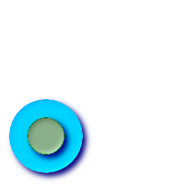

名前
ST_Within — ジオメトリAが完全にジオメトリBの内側にある場合にTRUEを返します。
概要
boolean ST_Within(geometry A, geometry B);
説明
ジオメトリAが完全にジオメトリBの内側にある場合にTRUEを返します。この関数が意味を持つためには、与えられるジオメトリは両方とも同じ座標系で同じSRIDを持つ必要があります。ST_Within(A,B)がTRUEかつST_Within(B,A)がTRUEである場合には、ふたつのジオメトリは空間的に同じであると考えられます。
GEOSモジュールによって実現しています。
![[重要]](images/important.png) | |
|
| |
この関数を不正なジオメトリで呼ばないでください。予期しない結果が返されます。 |
この関数の呼び出しによって、ジオメトリで使用可能なインデクスを使用したバウンディングボックスの比較が自動的に行われます。インデクスの使用を避けるには_ST_Withinを使います。
ご注意: これは論理値を返して整数を返さないのが「許される」版です。
 このメソッドはOpenGIS Simple Features Implementation Specification for SQL 1.1.に準拠しています。 s2.1.1.2 // s2.1.13.3 - a.Relate(b, 'T*F**F***')
このメソッドはOpenGIS Simple Features Implementation Specification for SQL 1.1.に準拠しています。 s2.1.1.2 // s2.1.13.3 - a.Relate(b, 'T*F**F***')
このメソッドはSQL/MM仕様に準拠しています。 SQL-MM 3: 5.1.30
例
-- 円の中にある円
SELECT ST_Within(smallc,smallc) As smallinsmall,
ST_Within(smallc, bigc) As smallinbig,
ST_Within(bigc,smallc) As biginsmall,
ST_Within(ST_Union(smallc, bigc), bigc) as unioninbig,
ST_Within(bigc, ST_Union(smallc, bigc)) as biginunion,
ST_Equals(bigc, ST_Union(smallc, bigc)) as bigisunion
FROM
(
SELECT ST_Buffer(ST_GeomFromText('POINT(50 50)'), 20) As smallc,
ST_Buffer(ST_GeomFromText('POINT(50 50)'), 40) As bigc) As foo;
-- 結果
smallinsmall | smallinbig | biginsmall | unioninbig | biginunion | bigisunion
--------------+------------+------------+------------+------------+------------
t | t | f | t | t | t
(1 row)
